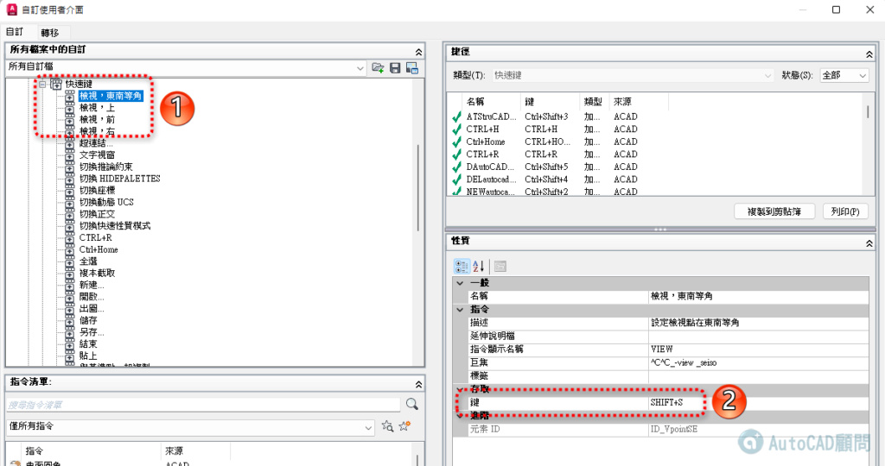

您可以為常用指令指定快速鍵 (有時稱為加速鍵)，並可指定暫時取代鍵，以在按下按鍵後執行指令或變更設定。按鍵組合不建議跟預設值一樣，可以多多測試適合自己的快速鍵。
1.按一下「工具」功能表 「自訂」「介面」。於指令提示下，輸入 cui。
2.在「自訂使用者介面」編輯器的「自訂」頁籤中，按一下「鍵盤捷徑」旁的加號 (+)，以將其展開。
3.按一下「快速鍵」旁的加號 (+)，以將其展開。
4.將「指令清單」窗格中的指令拖曳至「<檔名> 中的自訂」窗格中的快速鍵節點。
*在「性質」窗格中，會顯示您建立的新快速鍵的性質。
5.在「鍵」方塊中，按一下「...」按鈕，開啟「快速鍵」對話方塊。
6.在「快速鍵」對話方塊中，按一下「按新快速鍵」方塊以確保該方塊具有焦點。
7.按住輔助按鍵 Ctrl (如果需要請按 Shift 與 Alt 組合鍵)，然後按字母鍵、數字鍵、功能鍵或虛擬按鍵。有效的輔助按鍵與按鍵組合包括：
8.如果您不希望取代目前指定，請使用其他快速鍵。否則，按一下「確定」以指定快速鍵並關閉「快速鍵」對話方塊。
9.在「自訂使用者介面」編輯器中，按一下「確定」。
10.以後即可透過 Ctrl+Shift+1 來設定東南等角。
更新：以後即可透過 Shift+S 來設定東南等角。
SHIFT+T 檢視，上
SHIFT+F 檢視，前
SHIFT+R 檢視，右

動態操作：